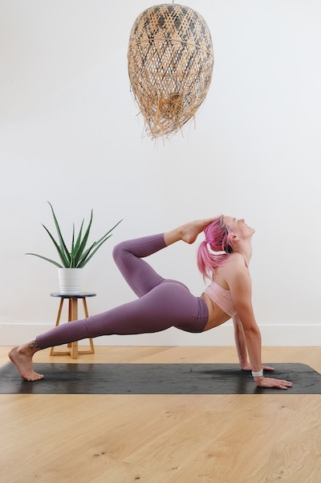
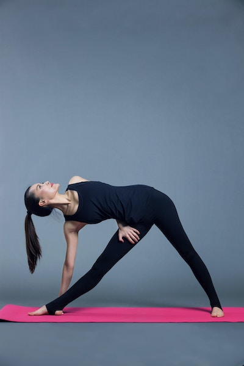

Stretch your way to good health.
Arpana Lama is a professional dancer and gymnast. Her passion for dance started early—she began taking dance classes in ninth grade. Eventually, Arpana joined Sushila Arts Academy, where she planned to study contemporary dance. However, her instructors were so impressed with her dancing that they encouraged her to study ballet instead. Since then, she has honed her ballet skills for almost eight years. Read more
What exaclty is stretching?
Stretching is an essential physical exercise that helps move the muscles and improve their elasticity. It can help people perform different tasks and sports efficiently by enhancing flexibility and elasticity. It offers several benefits, such as improved flexibility, reduced risk of injury, better posture, reduced muscle tension, and improved circulation. Read more
How can one start?
A person can start stretching anytime, but I prefer mornings. People should be clear about their limitations and how much their bodies can handle. Don't push your body too much, it can cause injury and muscle pain. A person who's just starting out should try the 'slow and steady' technique. But before starting, make sure your stomach isn't very full. After having a heavy lunch or dinner, you need to wait for two to three hours, whereas if you've eaten something light, you can wait for at least one hour. Read more
What are the different types of stretching?
Stretching helps increase athletic performance, improve general health, and eliminate pain and tension. There are three general types of stretching—static, dynamic, and ballistic. Static stretches are the most well-known and have been accepted as the standard practice for many years. But there are more effective methods for enhancing performance before exercise.Dynamic stretching is a type of active stretching that involves engaging the opposing muscle through the joint's range of motion. Read more
| Age | Men | Women | Total | % |
|---|---|---|---|---|
| 10s | 1 | 0 | 1 | 0.0% |
| 20s | 4 | 32 | 36 | 1.4% |
| 30s | 5 | 190 | 195 | 7.8% |